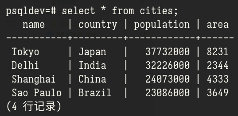
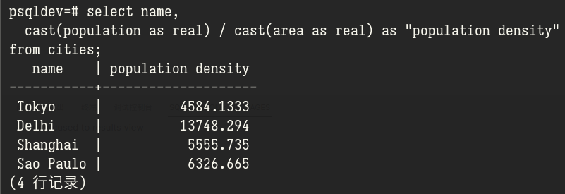
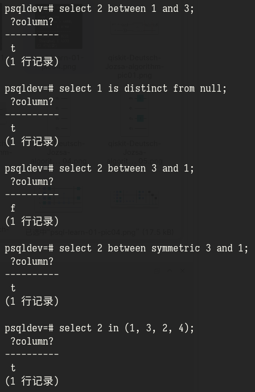
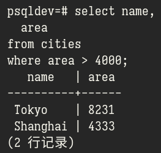

PostgreSQL 学习 01
archive time: 2023-05-02
今天来重新学习一下 PostgreSQL
之前有更新过几次有关 SQL 的学习记录博客， 但是由于没有坚持下来或者没有记录，最后被我删除了
最近我发现了一个视频系列: SQL and PostgreSQL The Complete Developer’s Guide， 我打算跟着这个视频系列来重新学习一下 PostgreSQL
创建数据库
关于 PostgreSQL 数据库的安装和配置我在这里就不再多说， Linux 上可以参照 Arch Wiki， Windows 或者其他平台可以按照 PostgreSQL 的文档来安装
安装好后，还需要创建一个数据库，
这个数据库就是练习 SQL 的地方，可以使用 createdb 命令:
createdb "<database name>"
这里的 "<database name>" 可以替换为你想要的名字，我这里就是 psqldev
创建好后连接数据库，可以使用 psql 命令来链接
psql "<database name>"
这里要注意用户是否正确，如果链接不上或者出错，可以检查一下是否是 PostgreSQL 的服务没有启动:
# 如果使用 systemd 管理
systemctl status postgresql.service
如果服务正常，那么要想想是不是没有添加用户名到 PostgreSQL 导致无法链接，具体操作请参照 Arch Wiki
如果都没有问题，那么恭喜，一个数据库就创建好了
创建表格
数据库的结构可以类比于 Microsoft Excel，
数据库就是一个 *.xlsx 格式的文件，而数据库里的每个表，就是对应于文件中的一张表格，
数据库中的一个数据，就对应于表中的一行内容
要存储数据到数据库中，首先要创建一张存储数据的表， 这里按照视频里的内容，表中要存放城市的信息，包括四个字段
- 城市姓名
- 城市属于哪个国家
- 城市的人口
- 城市的面积
确定好表的内容后，还需要确定每个字段的类型， PostgreSQL 所支持的类型可以在 文档 中查询
这里，城市姓名和国家选择使用 character varying(n) 类型，
其中 n 代表最大字符数量，在这里， 就是个不错的数字，
而人口和面积使用 integer 类型
每个表格都需要一个索引用的字段，称为 主键，对应关键字就是 primary key，
主键要求字段内容唯一，这里可以选择城市的姓名作为主键
综上，创建城市表的代码如下
create table cities (
name character varying(64) primary key,
country character varying(64),
population integer,
area integer
);
create table 就是要创建一个表，cities 是表的名字，
括号里面是表中的字段，使用逗号分隔，
每个字段的基本格式是 <column> <type> [primary key]，一张表只能有一个主键
如此一来，这个城市表就创建好了
插入数据
插入数据到某个表中，可以使用 insert into 语句来实现
insert into <table name> (..., <cols>)
values (..., <vals>),
...
(..., <vals>)
这里 <table name> 就是要插入的表的名字，<cols> 表示插入数据对应的字段名，
而 <vals> 则是插入的数据，数据顺序要和 <cols> 中指定的一致，例如:
insert into cities (name, country, population, area)
values ('Tokyo', 'Japan', 37732000, 8231),
('Delhi', 'India', 32226000, 2344),
('Shanghai', 'China', 24073000, 4333),
('Sao Paulo', 'Brazil', 23086000, 3649);
这里的数据摘自 Wikipedia，人口和面积均指的是城镇（Urban）人口
查询数据
要查看表的内容，可以使用 select 语句

其中 * 是一个通配符，表示所有的字段，一般 select 的语法如下:
select ..., <cols> from <table name>;
<cols> 就是字段名，可以重复，并且还可以在查询时做一些运算和重命名，例如
select name,
cast(population as real) / cast(area as real) as "population density"
from cities;
查询结果如下:

其中，在 PostgreSQL 中，单引号表示字符串字面值，
而双引号可以用来表示字段名这种特殊的 名称，
cast(<col> as <type>) 是一种类型转换，表示把某一个字段转变为 <type> 类型，
这里由于要做除法运算，所以从 integer 类型转为了 real 类型，
而整个运算的结果使用 as 起了一个字段别名 population density
常见数学运算:
| 运算 | 符号或函数 |
|---|---|
| 加法 | + |
| 减法 | - |
| 乘法 | * |
| 除法 | / |
| 取余 | % |
| 乘方 | ^ |
| 平方根，立方根 | |/，||/ |
| 绝对值 | @ |
| 位与或非 | &，|，~ |
| 位异或 | # |
| 位左移右移 | <<，>> |
对于字符串，或者文本值，也有一套操作符或函数可以使用:
| 字符串运算 | 符号或函数 |
|---|---|
| 拼接 | || |
| 转为大写 | upper() |
| 转为小写 | lower() |
| 字符长度 | character_length() |
| 位长度 | bit_length() |
| 字节长度 | octet_length() |
筛选数据
在查询时，还可以添加一些条件作为筛选（filter）
一般逻辑关系可以有:
| 关系或操作 | 符号 |
|---|---|
| 与或非 | and，or，not |
| 大于，大于等于 | >，>= |
| 小于，小于等于 | <，<= |
| 等于 | = |
| 不等 | <> 或 != |
| 在一个范围内 | between |
| 在一个列表内 | in |
| 不再范围或列表内 | not between，not in |
| 有别于 | is distinct from |
| 是 NULL | is null |
其中一些语句的示例

而筛选则使用 where 语句，例如:
select name,
area
from cities
where area > 4000;
查询结果如下

在 where 中同样可以使用数学运算和一些函数
今天就暂时把一些基础内容过了一遍，
后续还有 update 和 delete 什么的，那就留到下次把